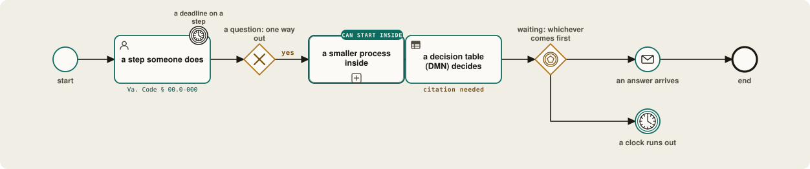
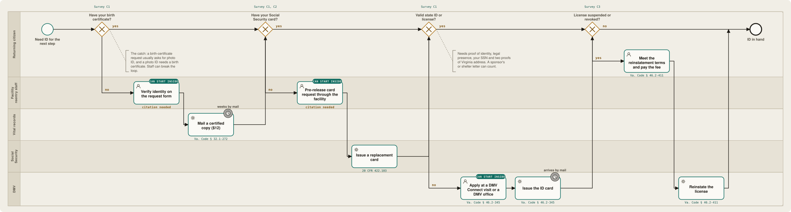
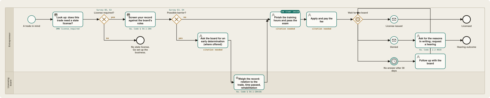
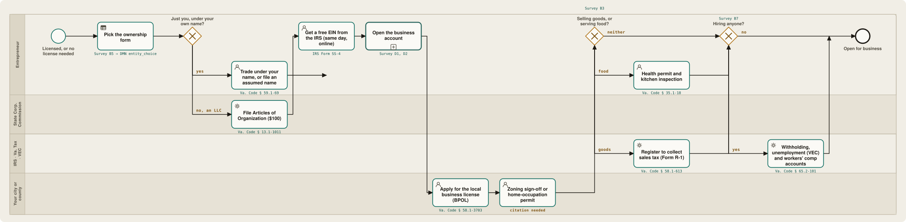

The road · Virginia · draft maps
Starting a business after release, one office at a time.
Five process maps and one decision table cover the whole road: getting an ID, getting licensed in a trade, setting up the business, and the money, tax and benefits questions that run alongside. Every step names who does it and the law behind it. Green tags mark what can start before release.
How to read these maps, in one line each. A rounded box is a step someone does. A diamond is a question with one way out. A box with a plus sign is a smaller process. A clock is a wait or a deadline. The small line under a step is the law or survey question behind it; citation needed means a reviewer still has to fill it in.

01 The whole road
Order matters more than anyone tells you.
ID comes first because the bank, the IRS, the licensing board and every lender ask for it. The ownership form comes before the bank account because the bank wants the formation papers and the tax number. Licenses, taxes and start-up money can run side by side. Benefits counseling comes before the first dollar of income, not after.

Scroll sideways to follow the road.
Supervision and benefits
If you will be on parole, probation or supervised release, the map adds one step before anything else: check your business plans with your officer. Conditions can limit hours, travel, internet use or handling cash (survey A5, E5). If you will get SNAP, SSI or Medicaid, it adds benefits counseling before income starts (F5).
Licenses, taxes, money
The parallel bar means these can move together. Someone waiting on a board can be setting up their bookkeeping and talking to a credit union in the same month.
Every box has a code
The small "Survey B5" style notes show which answers drive each stop. A person with a valid license skips the ID subprocess entirely; a person working alone never sees the employer accounts. See the crosswalk →
02 Getting an ID
Three documents that each ask for one of the others.
A birth certificate request usually wants photo ID. A Social Security card wants proof of identity. A state ID wants both, plus two proofs of address you may not have on your first week out. Five offices are involved. The way through the loop is to start inside, with staff who can vouch for identity on the forms.


Scroll sideways. Five lanes, one person.
What the map says
Birth certificate. In Virginia a certified copy costs $12 and comes by mail, which can take weeks. Where the facility verifies identity on the request, the copy can be waiting at release instead of being the first thing you chase.
Social Security card. Some facilities have an agreement with Social Security to request replacement cards before release. Where none exists the request waits until you have another ID in hand, which is why the two steps sit in different lanes.
State ID. Virginia's DMV runs mobile "DMV Connect" visits, including to correctional facilities, and the Department of Corrections works with DMV to get IDs issued before release. The card itself is mailed, so an address matters. A letter from a sponsor, a shelter or a reentry program can serve as proof of residency; check the current DMV list.
Driver's license. If your license was suspended, reinstatement means meeting the terms of the suspension and paying the reinstatement fee. Virginia stopped suspending licenses for unpaid court fines and costs in 2020; many other states still do, and that single rule decides whether a trucking, moving or landscaping business is possible at all.
Three of the ten steps
Identity verification for the birth-certificate request, the pre-release Social Security request, and the DMV visit. The staff survey asks each facility which of these it can actually do.
Two citations missing
The authority for staff identity verification on vital-records requests, and for the Social Security pre-release card process, are marked citation needed. Both exist in practice; the map waits for a reviewer to pin the source.
03 Getting licensed
Barbering, HVAC, contracting, food: the board is a process too.
Many of the trades people learn inside need a state license outside. The good news is that most states, Virginia included, no longer let a board refuse a license simply because of a conviction. The board has to show the record relates to the trade and weigh a list of factors. The map puts that screen first, so nobody spends a year on hours they cannot use.


Scroll sideways to the waiting room.
The decision table behind "possible barrier?"
Gateways route; decision tables decide. This table reads three survey answers — felony or misdemeanor (E3), the record category (E4), and the kind of trade (B3) — and returns how likely a barrier is and what to do next. Rules are read top down and the first match wins, so the specific cases sit above the general ones. It is illustrative and unreviewed; it is not a board's determination.
| F | record_class E3 | record_category E4 | trade group B3 | barrier | next step | authority |
|---|---|---|---|---|---|---|
| 1 | none | – | – | none | Apply when the training and exam are done. | § 54.1-204(A) |
| 2 | – | child or vulnerable adult | care | likely | Child, elder and home care run on barrier-crime lists, not the general test. Talk through other trades with a mentor before investing in hours. | § 63.2-1719 et seq. |
| 3 | felony | financial | handles client money | review | The record relates to the trade, so the board will weigh it. Ask for an early determination where offered; gather evidence of time passed and rehabilitation. | § 54.1-204(B) |
| 4 | misdemeanor | – | – | low | Apply. Answer record questions as asked; a conviction alone cannot be the reason for a refusal. | § 54.1-204(A) |
| 5 | felony | – | – | review | The board weighs nature and seriousness, relation to the trade, time elapsed, age at the time, and rehabilitation. Prepare that record before applying. | § 54.1-204(B) |
Download: licensing_barrier.dmn (DMN 1.3). Virginia Code citations; "§" means Va. Code throughout this page.
- The nature and seriousness of the crime
- Its relationship to the trade and the license being sought
- Whether the trade would offer an opportunity to repeat it
- The extent and nature of past criminal activity
- Your age at the time
- Time elapsed since
- Conduct and work history since
- Evidence of rehabilitation
Va. Code § 54.1-204(B). A board may not refuse a license solely because of a prior conviction (§ 54.1-204(A)).
Hours and exams
Many facilities run barbering, cosmetology, welding or HVAC programs. Where the board accepts the school, the hours count. The map marks training as a step that can start inside, and asks the staff survey which programs the facility offers (question 7).
04 Setting up the business
Four offices, most of them online, one of them a counter downtown.
This is the part people picture when they say "start a business", and it is the easiest part of the road once ID is solved. The State Corporation Commission forms the company, the IRS gives a tax number the same day for free, the bank opens the account, and your city or county issues the local license. What you sell and whether you hire add branches.


Scroll sideways. The counter is at the bottom.
Your name, or an LLC
Working alone under your own name needs no filing at all. A business name needs an assumed-name certificate with the SCC (§ 59.1-69). An LLC costs $100 to form (§ 13.1-1011) and $50 a year to keep. Partners and co-ops are separate branches the survey can open.
The EIN is free
An Employer Identification Number from the IRS takes minutes online and costs nothing (Form SS-4). Anyone charging for it is a middleman. Banks want it; so do most licenses. Sole proprietors can use it instead of giving out a Social Security number.
BPOL and zoning
Virginia localities may tax business by gross receipts through the BPOL license (§ 58.1-3703); many exempt small receipts but still want the application. Working from home usually means a home-occupation permit from the same building.
Sales tax registration
Selling taxable goods means registering as a dealer with Virginia Tax (Form R-1, § 58.1-613) and filing returns even in months with no sales. Food adds the local meals tax and a health permit and inspection (§ 35.1-18).
Three more accounts
The first employee brings state withholding, an unemployment-insurance account with the Virginia Employment Commission, and workers' compensation insurance once there are three or more employees (§ 65.2-101). The map only opens this branch when B7 says yes.
A second-chance account
If a past account was closed owing money, a ChexSystems record can block a new one. Second-chance accounts and credit unions exist for exactly this; the banking subprocess chooses between them from D1 and D2.
05 Money, taxes, benefits
The three tracks that run beside the paperwork.
These are not separate maps yet; they are the next ones to draw. Here is what the survey already captures and what the model does with it.
Small loans for small starts
Most of the businesses people name in the survey start under $2,500. Community lenders (CDFIs) and credit unions make loans at that size and often pair them with coaching. The SBA Microloan program lends up to $50,000 through local intermediaries; Kiva lends up to $15,000 at 0% through crowdfunding. The funding branch picks between bootstrap, family, CDFI, SBA and grants from F1 and F2.
Quarterly, from the first year
Self-employment tax is 15.3% on net earnings, on top of income tax, and the IRS expects quarterly estimates if you will owe $1,000 or more. If returns were never filed, the IRS generally wants the last six years in order before it treats you as current. The tax subprocess adds back-filing, an EIN and a short course on estimates and records.
Income can cost you coverage
SSI ignores the first $65 of monthly earnings and half of the rest, so a small business does not end benefits at once, but it does reduce them. SNAP counts net self-employment income. Medicaid has an income ceiling. A benefits counselor can model the cliff before it arrives; the map adds that step whenever F5 says yes.
Fines, restitution, child support
Court debt, restitution and child support follow you out and can be garnished from pay or taken from refunds. They affect loan eligibility and sometimes a license. The credit-and-debts subprocess pulls the free credit report and lists what is owed before the lender does.
Ask before you build
Conditions of release can bar travel across county lines, internet use, contact with certain people, or handling cash. The map puts one step before everything: tell your officer the plan and get the answer in writing.
Referrals first
The survey's barrier questions do not route the business steps; they prioritize referrals. Someone without a stable address gets the housing referral before the DMV visit, because the card is mailed.
06 What can start inside
A year before release is a year of lead time.
Everything below is a step a facility can host, in the order it pays off. The staff survey asks which of them each facility can actually support, and the model starts those tasks when the release date is within twelve months (A1).
| Step | Who helps | Why it matters | Survey |
|---|---|---|---|
| Take the readiness survey | Program staff, non-staff volunteer | Sets the whole path; nothing else on this list is assigned without it. | A–H |
| Birth certificate request | Reentry staff verify identity | Breaks the ID loop; the copy is waiting at release. | C1 |
| Social Security card request | Facility agreement with SSA | Needed for the EIN, the bank and the DMV. | C1, C2 |
| State ID | DMV Connect visit | The one document nearly every later step asks for. | C1, C3 |
| Training hours and certificates | Career and technical education | Barber, cosmetology, welding, HVAC, OSHA, ServSafe hours count where the board accepts the school. | E1 |
| Free credit report | Financial-literacy class | Shows closed accounts, debts and identity theft before a lender does. | D1–D4 |
| Business plan and pricing | Entrepreneurship class, mentor | Most of the survey's top learning requests. Paper is enough. | B4, G1 |
| License lookup and record screen | Program staff with the decision table | Nobody should finish 1,000 hours for a license the board will not issue. | B3, E3, E4 |
07 The files
Every map is a plain file. Open it, fix it, send it back.
The maps on this page are generated from small JSON specs in the repository. The build writes both the picture and a standard BPMN 2.0 file that opens in bpmn.io, Camunda Modeler or SpiffWorkflow. The decision table is DMN 1.3. All of it is CC0.
To add a state, three decision tables are needed first — does the trade need a license, could the record be a barrier, which entity fits — plus the local variations in the ID subprocess. Then a reviewer to sign off on each citation. Write to us if that is you.